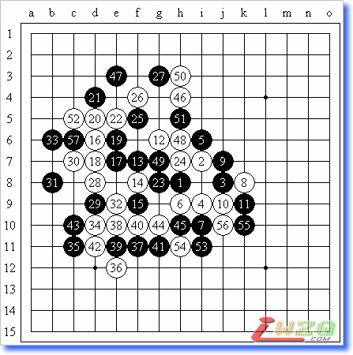

首届全国五子棋锦标赛，天津市青年宫，2007年10月4日
第三轮，恒星局（交换），5A＝i8，李一（黑）和张（白）

个人认为这盘棋双方下得还是挺精彩的，特别是屏蔽，他强大的防守力在这盘棋中体现得淋漓尽致。
比赛的前一天晚上，我、屏蔽、云飞和王硕在一块吃了晚饭，庆祝我俩第二天相遇，呵呵~~~回到房间后，我就开始想开什么局。最开始想的是名月的一个白6的变化，因为山口曾经在这个变化中执黑输给了贺茂雪，并且我也没怎么见过屏蔽走这个变化。于是我就开始研究这个变化的各个分支，包括黑棋的各种变招以及白棋的应点，研究进展得还可以，快夜里12点时我已经把白14之前的种种变化都记了下来。正当我以为可以安心睡觉的时候，意想不到的事情发生了！我突然发现聂淼在ORC中走的一个变化是黑胜的，而且胜法是如此的简单，白棋一点反击的手段都没有！我意识到，对屏蔽走这个变化将是一件非常危险的事情。于是，我临时决定修改我的计划，不开名月了。但是开什么呢？赛前准备的还有云月和恒星，但我始终无法决定到底开什么。更何况，时间已经不允许我看更多的谱了，所以我有针对性的看了云雨月和恒星的几个谱后就睡觉了。
第二天，经过权衡，我选择了恒星。选择恒星的理由有三：第一是前一天晚上看云月谱时觉得白棋不太好下；第二是山口曾经在2002年的名人战里上演了恒星炸裂，轻取长谷川获得名人头衔，而我也想体验一把当山口的感觉；而第三则是针对恒星这个白6的，即和6－10存在盘端问题。那个6黑棋飘几手后黑简单胜，而这个的胜法要复杂许多，如果没研究过，几乎不太可能在实战中走出正解。话说有一次山口对田中幸一走的也是这个变化，山口执黑，结果一手走错，没杀出来，最终成和。可以说，这是一个山口都不会走的恒星局面。嘿嘿~
实战的黑7看着很熟悉，我想应该是屏蔽看了那年的名人战，借用了长谷川的走法吧。于是我也没多想，走了山口在那盘中走的8，感觉应该是最强了。12抢占要点，感觉白棋可以攻了。但是后面黑棋防得好强，白棋始终找不到杀机。32活三，实战中我们都以为33挡上面唯一，反挡则34－57后白抓三三。但局后复盘发现，33挡下面白是没有杀的，说不定黑棋还能取得优势~36看着挺吓人，实际什么都没有。下到45，双方的时间已经不多了，46最后一骗，但这种骗怎能骗得了屏蔽？47活三后白棋彻底没先手了，但因为时间和空间的限制，黑棋想要取胜也很难了。57后屏蔽提和，我想了想，决定还是和了，因为虽然右边还有很大的空间，但是现在的局面很平衡，或者说黑棋还有一点外势，白棋想要取胜几乎不可能，并且，一天有三轮比赛，这盘已经下了很长时间了，对于这种必和的局面，与其下满了再和，还不如早点和了，早点吃饭、休息，来全力准备下一轮。于是双方签字，和棋。
后来，有人问我们，你们是拼和的还是议和的？看了谱你就知道，当然是拼和的！在回答这个问题的同时，我还想说，希望以后不要再有人问这种问题了。我一直都是很看重棋道的，陈伟曾经说过：“为什么国外的高手们在大赛中很少和棋，而我们的和棋很多？这种现象值得思考，我认为国外棋手的这种全力以赴，争取胜利的精神是值得中国棋手学习的。只有具备了这种精神的人才有资格做真正的高手！”就像顾闻一说的那样：“棋，本来就是胜负师，弯弯绕绕的东西多了，也就失去了下棋的本意。”